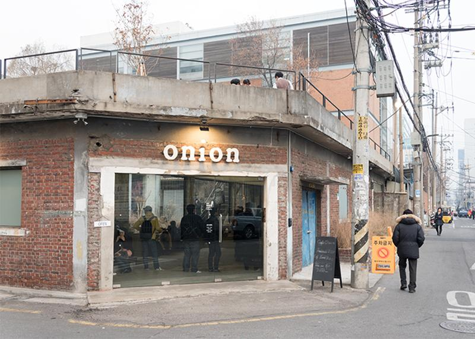
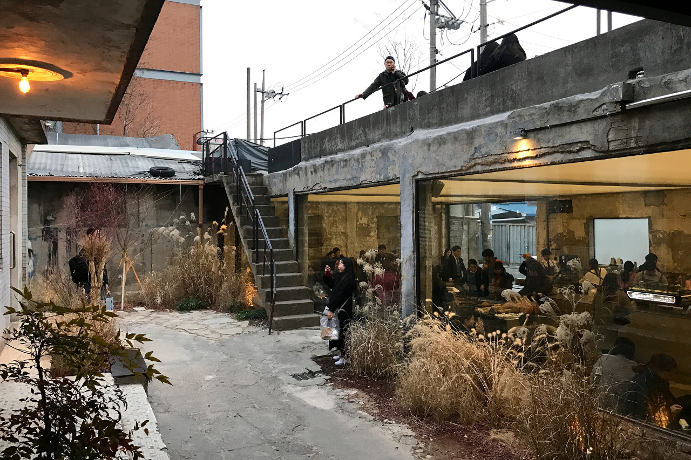
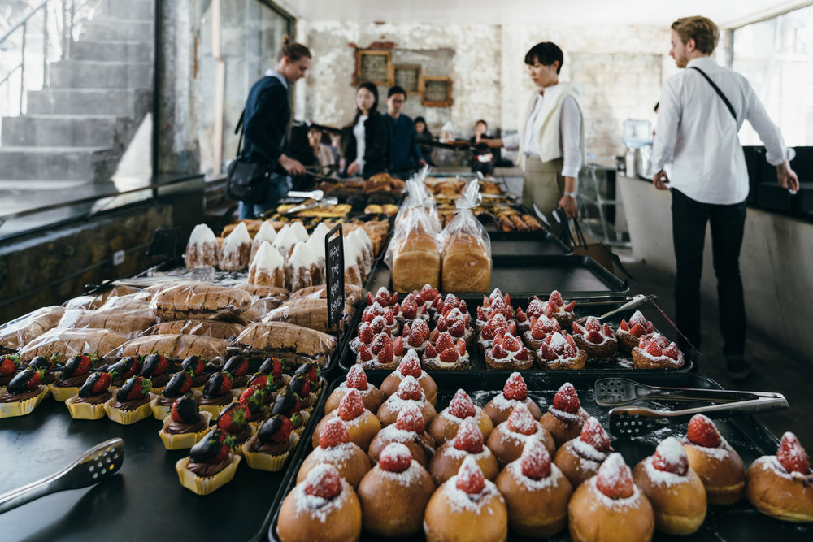
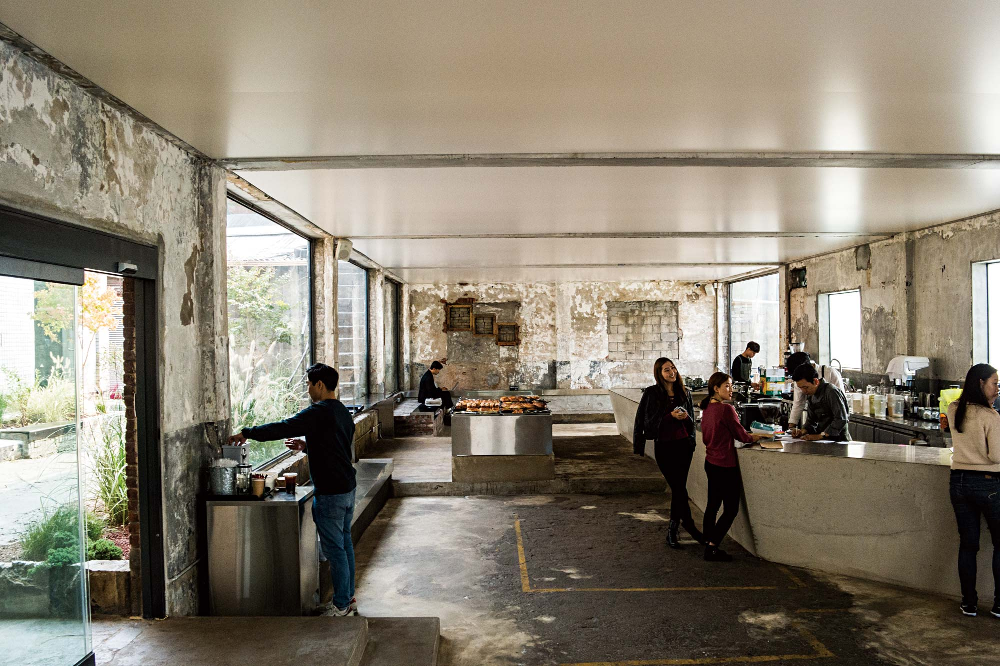
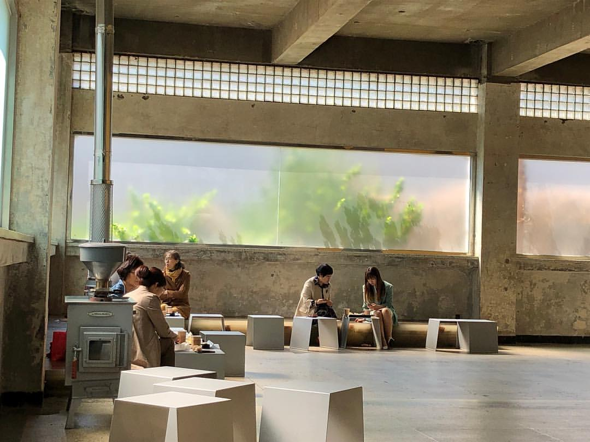
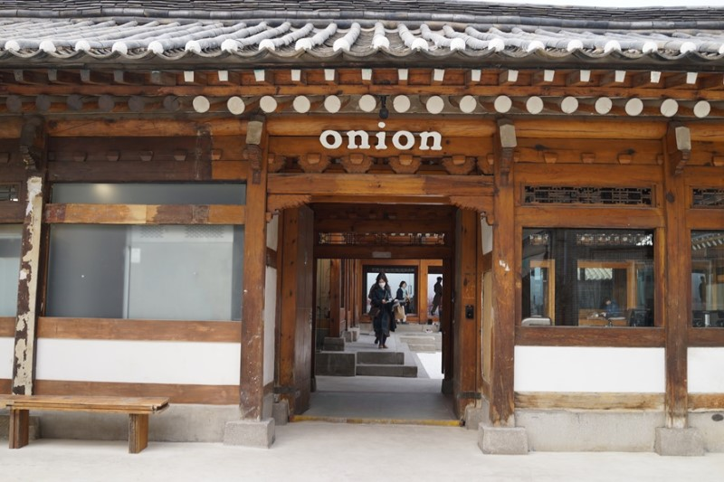

CAFE 'ONION'



소개
성수동에서 빵과 컨셉으로 한순간 카페 성지 중 하나가 되었고, 미아 그리고 안국으로 매장을 확대하고 있다.
성수 • 미아 • 안국 공간 디자인 모두 패브리커[fabrikr]가 협업으로 창조했다.
매장

- 어니언 성수

- 어니언 미아

- 어니언 안국
느낀점
HTML을 처음으로 배우면서 태그가 많아서 헷갈리기도 했고 어떻게 활용해야 할지 막막했는데,
천천히 공부해가면서 하다보니 몇가지 태그는 익숙해진 것 같다.
수학공식처럼 결과물이 나오는 것 같아서 재미있었고 앞으로 다양한 태그를 더 배워서 적절하게 활용해보고 싶다.
상단으로